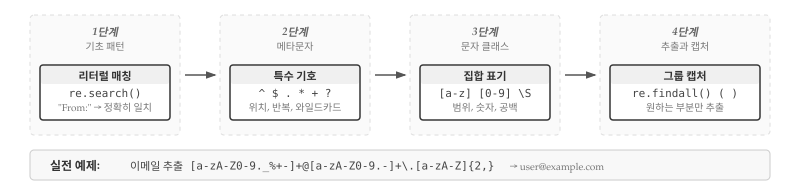
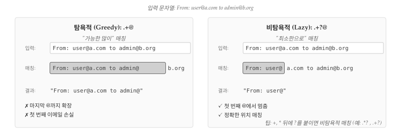
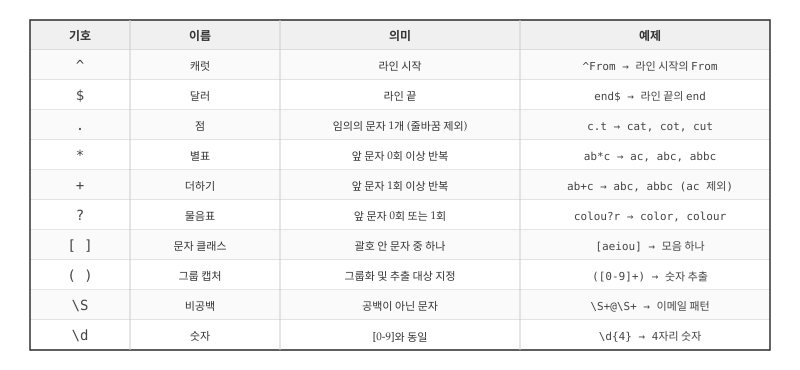
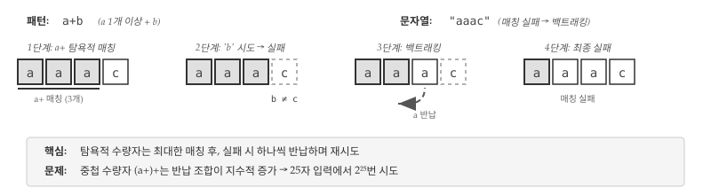

import urllib.request
import re
# 실습파일 다운로드
url = "https://www.py4e.com/code3/mbox-short.txt"
urllib.request.urlretrieve(url, "mbox-short.txt")
# 정규표현식 실습
hand = open('mbox-short.txt')
for line in hand:
line = line.rstrip()
if re.search('From:', line):
print(line)
#> From: stephen.marquard@uct.ac.za
#> From: louis@media.berkeley.edu
#> From: zqian@umich.edu
#> ...24 정규 표현식
앞선 장에서 파일을 읽고 패턴을 찾아 원하는 정보를 추출하는 방법을 살펴보았다. split(), find() 같은 문자열 메서드와 리스트 슬라이싱을 조합해 데이터를 가공했는데, 텍스트에서 특정 패턴을 검색하고 추출하는 작업은 프로그래밍에서 매우 빈번하게 발생한다. 파이썬은 이런 작업을 효율적으로 처리할 수 있는 정규 표현식(Regular Expression)이라는 강력한 도구를 제공하며, 정규표현식을 이제야 소개하는 이유는 강력한 만큼 구문이 복잡해서 익숙해지는 데 시간이 필요하기 때문이다.

그림 24.1 는 정규표현식의 학습 흐름을 보여준다. 1단계에서는 re.search() 함수로 문자열이 특정 패턴을 포함하는지 검사하는 리터럴 매칭1부터 시작하며, 2단계에서 ^, $, ., *, +, ? 같은 메타문자를 익히고, 3단계에서 [a-z], [0-9], \S 같은 문자 클래스를 배운 후, 4단계에서 re.findall()과 괄호 ()를 사용한 캡처 그룹으로 원하는 부분만 추출하는 기법을 익힌다.
정규표현식은 문자열 검색과 파싱을 위한 DSL(Domain-Specific Language, 도메인 특화 언어)이며, 정규표현식만 다루는 전문 서적이 있을 정도로 깊이 있는 주제다. 이번 장에서는 실무에서 자주 쓰이는 기초 문법을 중심으로 다루며, 더 자세한 내용은 아래 자료를 참고한다.
파이썬에서 정규표현식은 내장 모듈 re로 지원되며, 가장 기본적인 함수는 패턴 존재 여부를 확인하는 re.search()다.
위 코드는 파일을 열고 각 라인을 순회하며 re.search() 함수로 “From:” 패턴이 포함된 라인만 출력한다. 하지만 단순 문자열 검색은 in 연산자로도 충분하므로, 정규표현식의 진정한 힘은 아직 드러나지 않는다. 메타문자(특수문자)를 활용할 때 비로소 정규표현식의 위력이 발휘되며, 몇 개의 특수 기호만으로 정교한 패턴 매칭과 데이터 추출이 가능해진다.
캐럿 기호(^)는 “라인 시작”을 의미하는 앵커(anchor)로, ^From: 패턴은 라인이 “From:”으로 시작하는 경우에만 매칭된다. 아직은 단순한 예제지만, ^ 같은 메타문자로 매칭 조건을 정밀하게 제어할 수 있다는 점이 핵심이다.
import re
hand = open('mbox-short.txt')
for line in hand:
line = line.rstrip()
if re.search('^From:', line):
print(line)
#> From: stephen.marquard@uct.ac.za
#> From: louis@media.berkeley.edu
#> From: zqian@umich.edu
#> ...
24.1 패턴 매칭
정규표현식에는 다양한 메타문자가 있으며, 가장 자주 쓰이는 것이 점(.)으로 임의의 문자 1개를 매칭한다. F..m: 패턴은 “From:”, “Fxxm:”, “F12m:”, “F!m?:” 등과 매칭되는데, 점 2개가 각각 임의의 문자 1개씩을 대신하기 때문이다.
import re
hand = open('mbox-short.txt')
for line in hand:
line = line.rstrip()
if re.search('^F..m:', line):
print(line)
#> From: stephen.marquard@uct.ac.za
#> From: louis@media.berkeley.edu
#> From: zqian@umich.edu
#> ...점과 함께 반복 수량자를 조합하면 더욱 강력해지는데, *는 앞 문자가 0회 이상, +는 1회 이상 반복됨을 의미한다. 반복 수량자와 점을 조합한 와일드카드(wildcard) 패턴으로 매칭 범위를 크게 확장할 수 있다.
import re
hand = open('mbox-short.txt')
for line in hand:
line = line.rstrip()
if re.search('^From:.+@', line):
print(line)
#> From: stephen.marquard@uct.ac.za
#> From: louis@media.berkeley.edu
#> From: zqian@umich.edu
#> ...^From:.+@ 패턴은 “From:”으로 시작하고, 1개 이상의 임의 문자(.+) 뒤에 @가 오는 라인을 찾는다. 예를 들어 From: stephen.marquard@uct.ac.za 라인에서 .+ 패턴이 콜론(:)과 @ 사이의 모든 문자를 매칭한다.
.+와 .*는 탐욕적(greedy) 매칭을 수행하는데, 이는 가능한 한 많은 문자를 매칭하려고 “밀어내듯” 확장하는 특성을 말한다. 따라서 문자열에 여러 @가 있으면 마지막 @까지 매칭된다. 탐욕적 매칭을 제어하려면 ?를 붙여 비탐욕적(lazy) 매칭으로 전환하면 되며, .+?나 .*?처럼 사용한다.
24.2 데이터 추출
앞서 살펴본 re.search() 함수는 패턴이 존재하는지 여부만 알려주지만, 실제 데이터 분석에서는 매칭된 부분을 직접 추출해야 하는 경우가 많다. 예를 들어 로그 파일에서 이메일 주소만 뽑아내거나, 웹 페이지에서 특정 형식의 데이터를 수집하는 작업이 여기에 해당한다.

그림 24.2 는 .+@ 패턴의 탐욕적 매칭과 .+?@ 패턴의 비탐욕적 매칭 차이를 보여준다. 탐욕적 매칭은 가능한 한 많은 문자를 매칭하여 마지막 @까지 확장되는 반면, 비탐욕적 매칭은 최소한 문자만 매칭하여 첫 번째 @에서 멈춘다. 데이터를 추출할 때 탐욕적 매칭의 특성을 이해하지 못하면 의도치 않은 결과가 나올 수 있으므로, ?를 붙여 비탐욕적 매칭으로 전환하는 방법을 반드시 알아두어야 한다.
re.findall() 함수는 패턴과 매칭되는 모든 부분 문자열을 추출하며, 다양한 형식의 텍스트에서 이메일 주소를 추출하는 예제를 통해 그 활용법을 살펴보자.
From stephen.marquard@uct.ac.za Sat Jan 5 09:14:16 2008
Return-Path: <postmaster@collab.sakaiproject.org>
for <source@collab.sakaiproject.org>;
Received: (from apache@localhost)
Author: stephen.marquard@uct.ac.za위와 같이 라인마다 형식이 다른 경우, 개별 파싱 로직을 일일이 작성하기보다 정규표현식으로 일괄 처리하는 것이 훨씬 효율적이다.
import re
s = 'Hello from csev@umich.edu to cwen@iupui.edu about the meeting @2PM'
lst = re.findall(r'\S+@\S+', s)
print(lst)
#> ['csev@umich.edu', 'cwen@iupui.edu']['csev@umich.edu', 'cwen@iupui.edu']re.findall() 함수는 패턴과 매칭되는 모든 문자열을 리스트로 반환하며, \S+@\S+ 패턴은 “공백이 아닌 문자 1개 이상 + @ + 공백이 아닌 문자 1개 이상” 구조를 찾는다. \S+ 패턴은 공백이 아닌 문자를 탐욕적으로 매칭하여 공백을 만날 때까지 최대한 확장되며, “2PM?”은 @ 앞에 공백이 아닌 문자가 없기 때문에 매칭되지 않는다. 이제 파일 전체에 적용해 이메일 주소를 추출해보자.
import re
hand = open('mbox-short.txt')
for line in hand:
line = line.rstrip()
x = re.findall(r'\S+@\S+', line)
if len(x) > 0:
print(x)각 라인에서 패턴과 매칭되는 모든 문자열을 추출하며, re.findall()은 리스트를 반환하므로 결과가 있는 경우에만 출력한다. 원데이터 mbox.txt 파일에 프로그램을 실행하면 다음과 같은 출력을 얻는다.
['stephen.marquard@uct.ac.za']
['<postmaster@collab.sakaiproject.org>']
['<200801051412.m05ECIaH010327@nakamura.uits.iupui.edu>']
['<source@collab.sakaiproject.org>;']
['apache@localhost)']
['source@collab.sakaiproject.org;']
['stephen.marquard@uct.ac.za']
['louis@media.berkeley.edu']
...출력을 보면 <, ; 같은 불필요한 문자가 포함되어 있어서, 영문자나 숫자로 시작하고 끝나는 이메일만 추출하도록 패턴을 개선해야 한다. 문자 클래스 [...]를 사용해 허용할 문자 집합을 명시할 수 있다.
[a-zA-Z0-9]\S*@\S*[a-zA-Z]위 패턴을 해석하면, [a-zA-Z0-9]는 영문자 또는 숫자로 시작해야 함을 의미하고, \S*2는 공백이 아닌 문자가 0개 이상 올 수 있음을 뜻하며, @는 골뱅이 문자 그대로이고, 마지막 [a-zA-Z]는 영문자로 끝나야 함을 나타낸다. + 대신 *를 쓴 이유는 [a-zA-Z0-9]가 이미 1개 문자를 매칭하기 때문이다.
import re
hand = open('mbox-short.txt')
for line in hand:
line = line.rstrip()
x = re.findall(r'[a-zA-Z0-9]\S*@\S*[a-zA-Z]', line)
if len(x) > 0:
print(x)['stephen.marquard@uct.ac.za']
['postmaster@collab.sakaiproject.org']
['200801051412.m05ECIaH010327@nakamura.uits.iupui.edu']
['source@collab.sakaiproject.org']
['apache@localhost']
['stephen.marquard@uct.ac.za']
['louis@media.berkeley.edu']
...[a-zA-Z]로 끝나도록 지정했으므로, “sakaiproject.org>;”에서 >는 제외되고 g에서 매칭이 종료된다.
24.3 검색과 추출
때로는 특정 조건을 만족하는 라인에서만 데이터를 추출해야 할 때가 있다. “X-”로 시작하는 라인에서 부동소수점 숫자만 추출하는 경우를 생각해보자.
X-DSPAM-Confidence: 0.8475
X-DSPAM-Probability: 0.0000모든 라인의 숫자가 아니라 특정 패턴을 가진 라인에서만 숫자를 추출해야 하며, 다음과 같은 패턴을 사용할 수 있다.
^X-.*: [0-9.]+위 패턴에서 ^X-는 “X-”로 시작함을 의미하고, .*는 임의 문자가 0개 이상 올 수 있음을 뜻하며, :는 콜론과 공백 그대로이고, [0-9.]+는 숫자 또는 점이 1개 이상임을 나타낸다. 참고로 문자 클래스 [...] 안의 점은 와일드카드가 아닌 리터럴 점이다.
import re
hand = open('mbox-short.txt')
for line in hand:
line = line.rstrip()
if re.search(r'^X\S*: [0-9.]+', line):
print(line)X-DSPAM-Confidence: 0.8475
X-DSPAM-Probability: 0.0000
X-DSPAM-Confidence: 0.6178
...원하는 패턴의 라인만 추출되지만, 라인 전체가 아닌 숫자만 추출하려면 어떻게 해야 할까? 캡처 그룹 ()을 사용하면 검색과 추출을 한 번에 처리할 수 있다. 괄호 ()는 캡처 그룹을 정의하며, 전체 패턴이 매칭된 후 괄호 안의 부분만 별도로 추출할 수 있다.
import re
hand = open('mbox-short.txt')
for line in hand:
line = line.rstrip()
x = re.findall(r'^X\S*: ([0-9.]+)', line)
if len(x) > 0:
print(x)([0-9.]+) 부분이 캡처 그룹이며, re.findall() 함수에 캡처 그룹이 있으면 그룹 내용만 반환한다. 전체 패턴이 매칭된 후 숫자 부분만 추출되어 다음과 같은 결과를 얻는다.
['0.8475']
['0.0000']
['0.6178']
['0.0000']
['0.6961']
...결과는 문자열이므로 필요시 float() 등으로 숫자형으로 변환한다. 또 다른 예제로 파일에서 SVN 리비전 번호를 추출해보자.
Details: http://source.sakaiproject.org/viewsvn/?view=rev&rev=39772캡처 그룹으로 rev= 뒤의 숫자만 추출할 수 있다.
import re
hand = open('mbox-short.txt')
for line in hand:
line = line.rstrip()
x = re.findall('^Details:.*rev=([0-9.]+)', line)
if len(x) > 0:
print(x)['39772']
['39771']
['39770']
['39769']
['39766']
...이메일 발송 시간을 추출하는 예제도 살펴보자. 다음과 같은 형식의 라인에서 시간 부분(시:분:초의 “시”)을 추출하고 싶다고 하자.
From stephen.marquard@uct.ac.za Sat Jan 5 09:14:16 2008split()으로 분리하는 것도 가능하지만, 정규표현식이 더 간결하다. ^From .* ([0-9][0-9]): 패턴에서 ^From은 “From”으로 시작함을 의미하고, .*는 임의 문자를 매칭하며, ([0-9][0-9]):는 공백 뒤에 오는 2자리 숫자를 캡처하고 콜론이 따라오는 구조를 찾는다.
import re
hand = open('mbox-short.txt')
for line in hand:
line = line.rstrip()
x = re.findall('^From .* ([0-9][0-9]):', line)
if len(x) > 0:
print(x)['09']
['18']
['16']
...24.4 이스케이프 문자
^, $, . 같은 메타문자를 리터럴 문자로 매칭하려면 어떻게 해야 할까? 역슬래시(\)로 이스케이프하면 된다. 금액에서 $ 기호를 찾는 예제를 보자.
import re
x = 'We just received $10.00 for cookies.'
y = re.findall(r'\$[0-9.]+', x)
print(y)
#> ['$10.00']['$10.00']\$ 패턴은 “라인 끝” 앵커가 아닌 리터럴 $ 문자를 매칭한다.
노트문자 클래스 안의 메타문자
[...] 안에서는 대부분의 메타문자가 리터럴로 취급된다. 예를 들어 [0-9.]에서 점은 와일드카드가 아닌 실제 점을 의미한다.
24.5 메타문자 정리
지금까지 다양한 메타문자를 사용해 패턴을 작성해보았다. 메타문자는 정규표현식의 핵심 구성 요소로, 각각 고유한 의미를 가지며 조합을 통해 복잡한 패턴을 표현할 수 있다. 처음에는 암호처럼 보이지만, 핵심 메타문자 몇 가지만 익히면 텍스트 처리 생산성이 크게 향상된다.

그림 24.3 는 실무에서 자주 사용되는 메타문자를 한눈에 볼 수 있도록 정리한 표이다. 앵커인 ^와 $는 라인의 시작과 끝 위치를 지정하고, 와일드카드 .은 줄바꿈을 제외한 임의의 문자 1개를 매칭한다. 수량자 *, +, ?는 앞 문자의 반복 횟수를 지정하며, 문자 클래스 [...]는 허용할 문자 집합을 명시하고, 캡처 그룹 (...)는 매칭된 부분을 추출할 때 사용한다.
힌트유닉스/리눅스 grep 명령어
정규표현식은 1960년대부터 유닉스에 내장되어 있으며, grep(Global Regular Expression Print) 명령어로 파일 검색이 가능하다.
$ grep '^From:' mbox-short.txt
From: stephen.marquard@uct.ac.za
From: louis@media.berkeley.edu다만 grep 정규표현식 문법은 파이썬과 약간 다르므로 주의가 필요하다.
24.6 디버깅
정규표현식 디버깅의 핵심은 백트래킹(backtracking)을 이해하는 것이다. 정규표현식 엔진은 패턴 매칭에 실패하면 이전 상태로 되돌아가 다른 경로를 시도하는데, 패턴이 복잡해지면 백트래킹 횟수가 기하급수적으로 증가해 성능 문제를 일으킨다.

그림 24.4 는 a+b 패턴이 “aaac” 문자열에서 실패하는 과정을 보여준다. 탐욕적 수량자 a+가 먼저 모든 ‘a’를 매칭한 후, ’b’를 찾지 못하면 ’a’ 하나씩 반납하며 재시도한다. 단순한 패턴에서는 문제가 없지만, 중첩 수량자 (a+)+나 연속 와일드카드 .*.*는 조합이 폭발적으로 증가해 재앙적 백트래킹(Catastrophic Backtracking)을 유발한다.
24.6.1 성능 문제 패턴
정규표현식에서 가장 치명적인 실수는 백트래킹이 폭발하는 패턴을 작성하는 것이다. 특히 수량자 안에 수량자가 중첩되거나, 와일드카드가 연속으로 나오는 패턴은 입력 길이에 따라 처리 시간이 지수적으로 증가한다. 25자 정도의 입력에서도 수 초에서 수 분이 소요될 수 있으며, 웹 서비스에서 정규표현식 기반 입력 검증이 이런 패턴을 포함하면 서비스 거부(DoS) 공격에 취약해진다.
import re
import time
# 위험한 패턴: 중첩 수량자
pattern = r'(a+)+b'
text = 'a' * 25 + 'c' # 매칭 실패 시 2^25번 시도
start = time.time()
re.search(pattern, text) # 수 초 ~ 수 분 소요
print(f"소요 시간: {time.time() - start:.2f}초")
노트왜 기하급수적으로 느려지는가?
(a+)+ 패턴이 “aaac” 입력에서 실패할 때, 엔진은 ‘a’ 3개를 어떻게 그룹으로 나눌지 모든 조합을 시도한다. aaa, aa+a, a+aa, a+a+a 등 각 위치마다 “여기서 끊을까, 계속할까” 두 가지 선택이 있어 n개 문자에 대해 2^(n-1)가지 조합이 생긴다. 25자 입력이면 약 3천만 번의 시도가 필요하고, 30자면 10억 번을 넘어선다.
피해야 할 대표적인 패턴으로는 중첩 수량자 (a+)+, 연속 와일드카드 .*.*, 중복 선택지 (a|a)+, 범용 중첩 (.+)+ 등이 있다. 중첩 수량자는 단순히 a+로, 연속 와일드카드는 .* 하나로, 중복 선택지는 a+로 대체하면 된다. 범용 중첩 패턴은 매칭하려는 대상에 맞게 구체적인 문자 클래스로 바꾸는 것이 바람직하다.
24.6.2 패턴 분해 테스트
복잡한 정규표현식을 한 번에 작성하면 오류를 찾기 어렵다. 효과적인 디버깅 방법은 패턴을 구성 요소별로 분해해 단계적으로 테스트하는 것이다. 각 단계에서 매칭 결과를 확인하면서 점진적으로 패턴을 확장하면, 문제가 발생하는 지점을 정확히 파악할 수 있다.
import re
email = "user.name+tag@sub.domain.com"
# 1단계: 로컬 파트만 테스트
print(re.findall(r'[\w.+-]+', email))
# 2단계: @ 포함
print(re.findall(r'[\w.+-]+@', email))
# 3단계: 도메인 추가
print(re.findall(r'[\w.+-]+@[\w.-]+', email))
# 4단계: 최종 패턴
print(re.findall(r'[\w.+-]+@[\w.-]+\.\w{2,}', email))['user.name+tag', 'sub.domain.com']
['user.name+tag@']
['user.name+tag@sub.domain.com']
['user.name+tag@sub.domain.com']1단계 [\w.+-]+는 이메일의 로컬 파트(@ 앞부분)를 매칭한다. \w는 단어 문자(영문자, 숫자, 밑줄)이고, 대괄호 안의 .+-는 마침표, 더하기, 하이픈을 리터럴로 허용하며, +는 이 문자들이 1회 이상 반복됨을 의미한다. 2단계에서 @를 붙여 골뱅이까지 포함하고, 3단계 [\w.-]+로 도메인 부분(영문자, 숫자, 마침표, 하이픈)을 추가한다. 4단계 \.\w{2,}에서 \.는 리터럴 마침표(메타문자가 아님)이고, \w{2,}는 단어 문자가 2개 이상 반복되어야 함을 뜻해 com, org 같은 최상위 도메인(TLD)을 매칭한다.
힌트raw string 필수
파이썬에서 정규표현식 패턴은 반드시 raw string(r'')으로 작성한다. 일반 문자열에서 \d는 파이썬이 먼저 해석하려고 시도하기 때문이다.
# 잘못된 방식 (이중 이스케이프 필요)
re.findall('\\d+', text)
# 올바른 방식
re.findall(r'\d+', text)💡 생각해볼 점
정규표현식을 처음 접하면 암호 같은 기호의 나열에 압도당하기 쉽다. 하지만 메타문자 10여 개만 익히면 대부분의 텍스트 처리 작업을 해결할 수 있다. 핵심은 한 번에 완벽한 패턴을 만들려 하지 말고, 단순한 패턴에서 시작해 점진적으로 확장하는 것이다. 패턴 분해 테스트에서 살펴본 것처럼, 로컬 파트 → @ 추가 → 도메인 → TLD 순으로 단계별 검증을 거치면 복잡한 패턴도 체계적으로 구축할 수 있다.
정규표현식의 강력함은 곧 위험성이기도 하다. 몇 글자로 수백 줄의 코드를 대체할 수 있지만, 잘못 작성된 패턴은 프로그램 전체를 멈추게 만들 수 있다. 특히 사용자 입력을 정규표현식으로 검증하는 웹 서비스에서 재앙적 백트래킹 취약점이 발견되면 서비스 전체가 마비될 수 있다. 패턴을 작성할 때는 “정상 입력에서 잘 동작하는가”뿐 아니라 “악의적 입력에서 어떻게 동작하는가”도 반드시 고려해야 한다.
다음 장에서 다룰 네트워크 프로그래밍과 웹 스크래핑에서 정규표현식의 진가가 드러난다. 웹 페이지에서 이메일, 전화번호, 가격 정보를 추출하거나 로그 파일에서 오류 패턴을 찾아낼 때, 정규표현식 없이는 수십 줄의 문자열 처리 코드가 필요하다. “알면 한 줄, 모르면 백 줄”이라는 격언처럼, 정규표현식은 텍스트 데이터를 다루는 프로그래머의 필수 도구다.